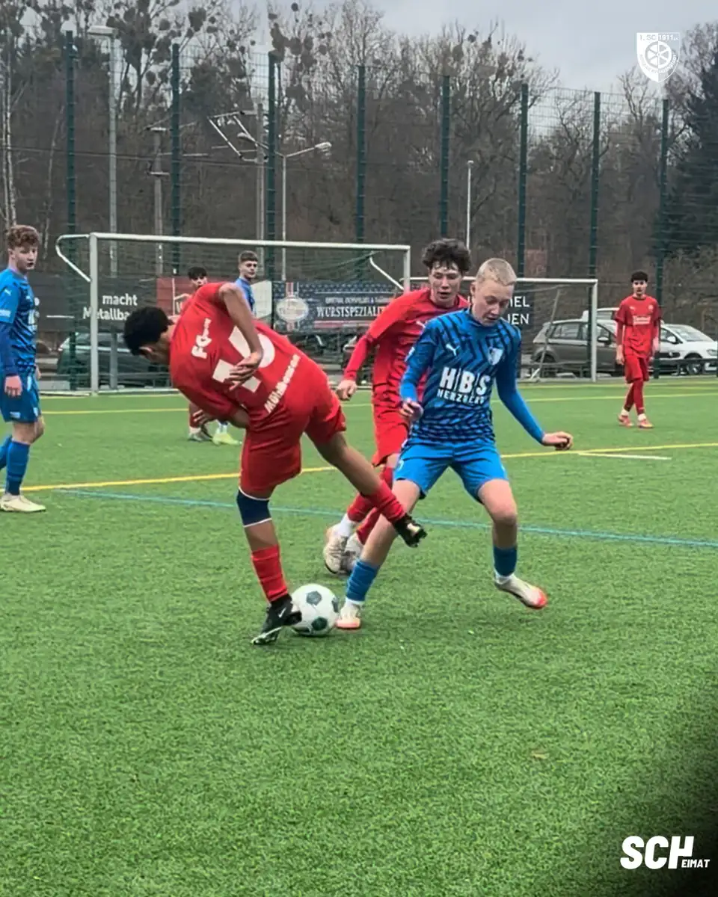
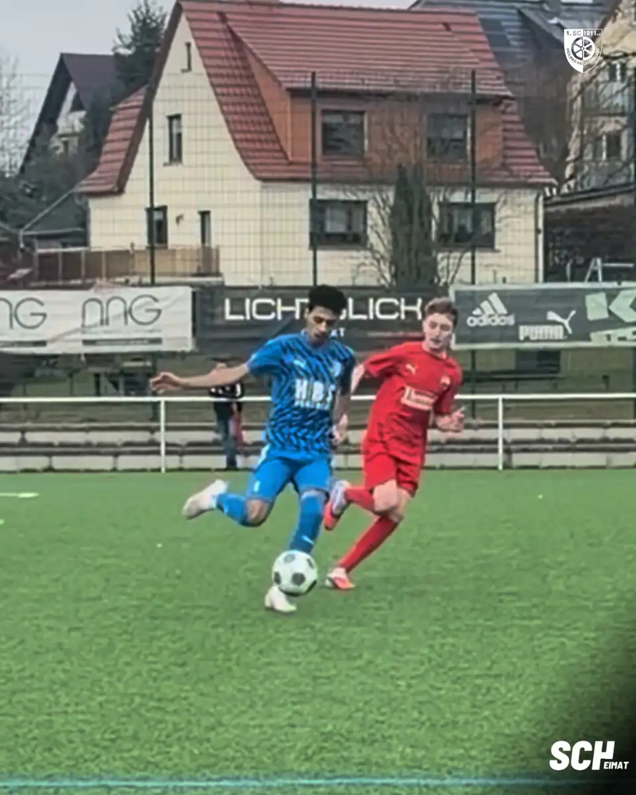
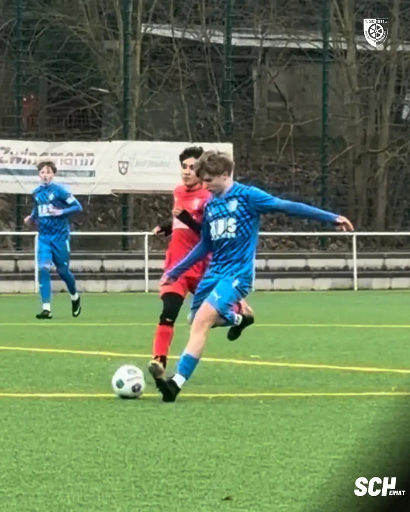
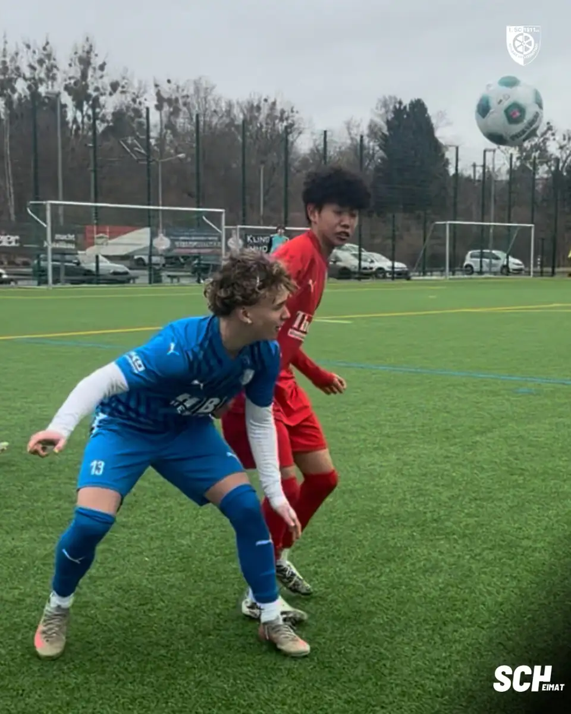
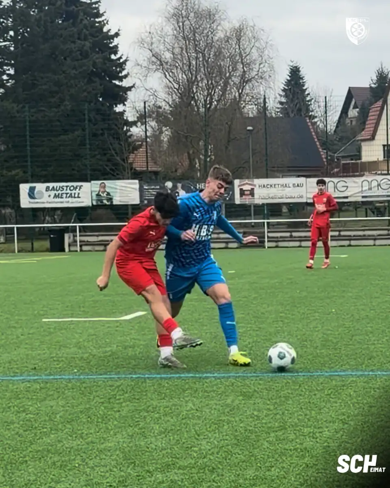
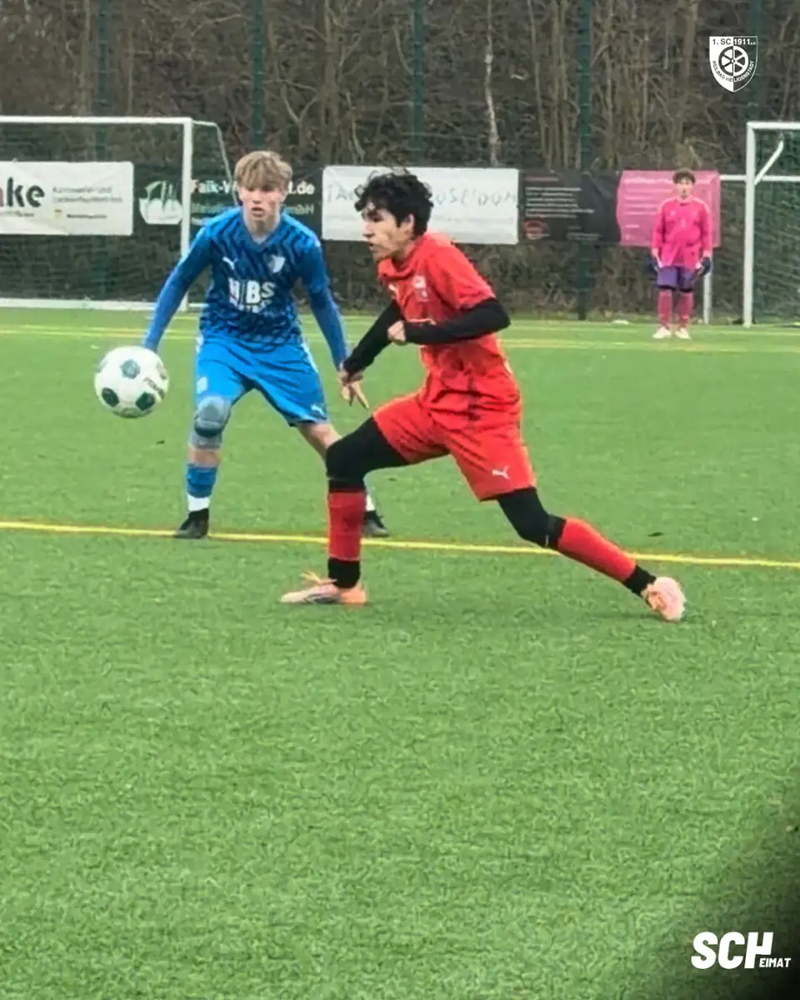
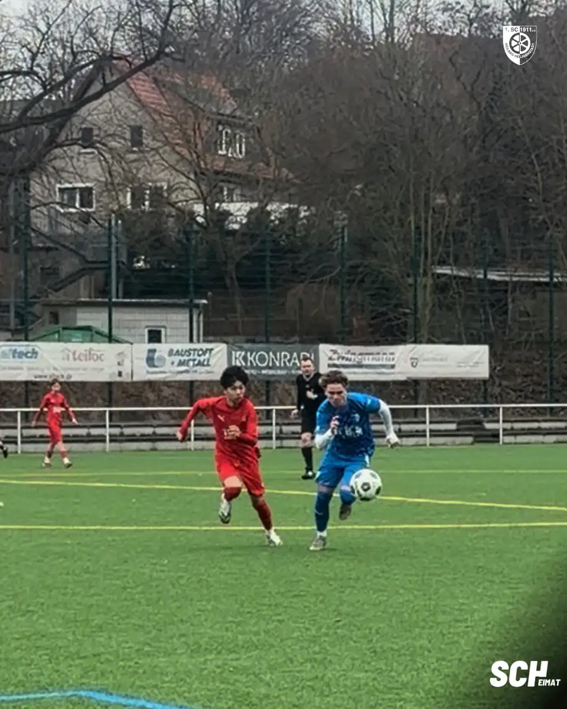
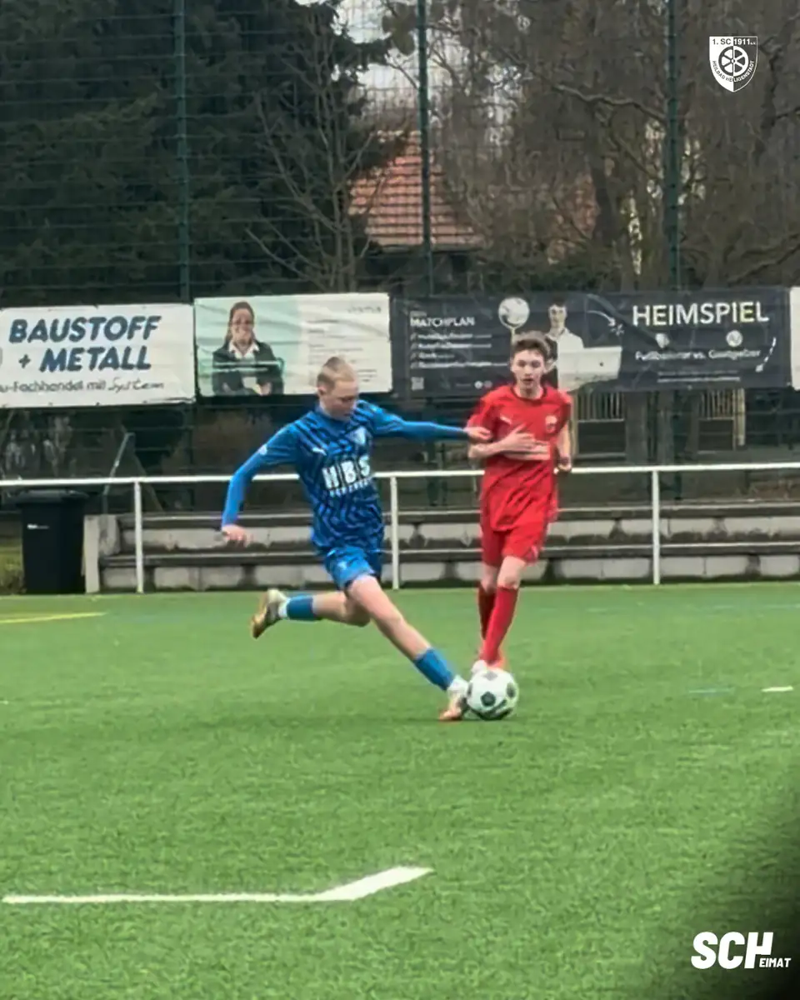

Am Samstag gewann unsere U15 ihr Heimspiel gegen Union Mühlhausen mit 4:1. Gespielt wurden zweimal 40 Minuten. In der ersten Halbzeit waren die Jungs von Trainer Christopher Preiß klar spielbestimmend und überzeugten mit einer klaren Spielidee sowie guter Struktur.
Fabian Nürnberg erzielte in der 18. Minute das 1:0, Konrad Meitzner erhöhte nur drei Minuten später auf 2:0. In der 31. Minute traf Silas Wiemuth zum 3:0, ehe Konrad Meitzner mit einem sehenswerten Abschluss in der 40. Minute den hochverdienten 4:0-Halbzeitstand markierte. Union Mühlhausen kam im ersten Durchgang zu keiner Torchance, während der SCH sogar noch weitere Treffer hätte erzielen können.
Nach der Pause ging durch zahlreiche Wechsel etwas der Spielfluss verloren. Die Partie plätscherte weitgehend dahin und erreichte nicht mehr das Niveau der ersten Halbzeit. Am Ende stand jedoch ein verdienter Testspielsieg.
Spieldaten
1. SC 1911 Heiligenstadt U15 – FC Union Mühlhausen 4:1 (4:0)
1. SC 1911 Heiligenstadt U15
Preiß – Ertmer – Schneider (Boer) – Kopach (Mahyar Alfathi) – Baumgarten – Hinze (Nöttgen) – Preis – Wiemuth (Watterott) – Strecker (Salata) – Meitzner (Griethe) – Nürnberg
FC Union Mühlhausen
Klein – Do – Eckert – Sellmann – Thiele – Stauch – Ott – Haj Hussein – Hasanyan – Urbach – Gast
Schiedsrichter
Neudeck
Tore:
1:0 Nürnberg (18.), 2:0 Meitzner (21.), 3:0 Wiemuth (34.), 4:0 Meitzner (39.), 4:1 Weber (54.)
Bereits einen Tag später traf man auf die U14 von Göttingen 05. Die Begegnung endete 3:3. In einem insgesamt ausgeglichenen Spiel zeigte unsere U15 eine durchwachsene Leistung mit guten Phasen, aber auch unnötigen Nachlässigkeiten.
Die Tore erzielten Dorian Salata (28.), Henry Griethe (52.) und Leon-Joel Preis (69.). Jonathan Strecker hatte zudem nach dem 3:3 noch den möglichen Siegtreffer auf dem Fuß.
Spieldaten
1. SC Göttingen 05 U14 – 1. SC 1911 Heiligenstadt U15 3:3 (4:0)
1. SC Göttingen 05 U14
Patt – Watzl – Lüdecke – Kiy – Freckmann – Schulze – Wellnitz – Rahlfs – Fischer – Hekalo – Mas Cima
1. SC 1911 Heiligenstadt U15
Preiß – Ertmer – Schneider – Kopach (36. Müller) – Baumgarten – Hinze (36. Mahyar Alfathi) – Preis – Wiemuth (36. Strecker) – Salata (43. Meitzner) – Griethe – Nürnberg
Schiedsrichter
Stövesand
Tore:
1:0 Fischer (3.), 1:1 Salata (28.), 2:1 Kiy (51.), 2:2 Griethe (52.), 3:2 Kiy (53.), 3:3 Preiß (69.)







